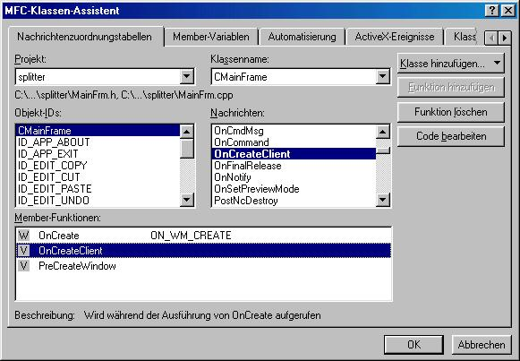

Bei mir sind das also DAdresse, DJoin, DKunde und DLand. Dazu die Dateien einfach im Explorer löschen (cpp und h dateien). Nun in den Klassenassistenten wechseln und eine Klasse auswählen, nacheinander die Klassen auswählen, dessen Dateien ihr gerade gelöscht habt. Es wird beispielsweise bei der Klasse DLand folgendes Dialogfeld angezeigt:
Dieses ist mit OK zu bestätigen. Im folgenden Dialogfeld auf den Button entfernen drücken.

Dies war nötig, damit die Ressourcen für andere Klassen wieder neu vergeben werden können.
Jetzt müssen die physikalisch schon gelöschten Dateien noch aus der Projektdatei gelöscht werden. Dazu in die Dateien-Ansicht wechseln und die cpp und h Files aus der Liste löschen.
- Löschen der Includes in der Datei MainFrame.cpp
// MainFrm.cpp : Implementierung der Klasse CMainFrame // #include "stdafx.h" #include "splitter.h" #include "MainFrm.h" #include "SplitterDoc.h" //#include "DKunde.h" gelöscht //#include "DLand.h" gelöscht //#include "DJoin.h" gelöscht //#include "DAdresse.h" gelöscht - Löschen der OnClientCreate der Klasse CMainFrame, die das Fenster in 4 Teile geteilt hat, mittels des Klassenassistenten.

Wird nun auf "Funktion löschen" gedrückt, erscheint folgender Dialog:
Diesen einfach mit Ja bestätigen und die Methode händisch aus der Datei MainFrame.cpp löschen. - Korrigieren der Includes in der Datei Splitter.cpp
// splitter.cpp : Legt das Klassenverhalten für die Anwendung fest. // #include "stdafx.h" #include "splitter.h" #include "MainFrm.h" #include "splitterDoc.h" // Löschen der folgenden Zeile //#include "DKunde.h" // Includieren der am Anfang erstellten View #include "TabView.h" - Ändern der Methode InitInstance der Klasse CSplitterApp.
Es muss die standardmässig benutzte View auf die am Anfang erstellte umgeändert werden.BOOL CSplitterApp::InitInstance() { AfxEnableControlContainer(); // Standardinitialisierung // Wenn Sie diese Funktionen nicht nutzen und die Größe Ihrer fertigen // ausführbaren Datei reduzieren wollen, sollten Sie die nachfolgenden // spezifischen Initialisierungsroutinen, die Sie nicht benötigen, entfernen. #ifdef _AFXDLL Enable3dControls(); // Diese Funktion bei Verwendung von MFC in gemeinsam genutzten DLLs aufrufen #else Enable3dControlsStatic(); // Diese Funktion bei statischen MFC-Anbindungen aufrufen #endif // Ändern des Registrierungsschlüssels, unter dem unsere Einstellungen gespeichert sind. // ZU ERLEDIGEN: Sie sollten dieser Zeichenfolge einen geeigneten Inhalt geben // wie z.B. den Namen Ihrer Firma oder Organisation. SetRegistryKey(_T("Local AppWizard-Generated Applications")); LoadStdProfileSettings(); // Standard INI-Dateioptionen laden (einschließlich MRU) // Dokumentvorlagen der Anwendung registrieren. Dokumentvorlagen // dienen als Verbindung zwischen Dokumenten, Rahmenfenstern und Ansichten. CSingleDocTemplate* pDocTemplate; pDocTemplate = new CSingleDocTemplate( IDR_MAINFRAME, RUNTIME_CLASS(CSplitterDoc), RUNTIME_CLASS(CMainFrame), // Haupt-SDI-Rahmenfenster RUNTIME_CLASS(CTabView)); // Hier die Anfang erstellte View eintragen. AddDocTemplate(pDocTemplate); // Befehlszeile parsen, um zu prüfen auf Standard-Umgebungsbefehle DDE, Datei offen CCommandLineInfo cmdInfo; ParseCommandLine(cmdInfo); // Verteilung der in der Befehlszeile angegebenen Befehle if (!ProcessShellCommand(cmdInfo)) return FALSE; // Das einzige Fenster ist initialisiert und kann jetzt angezeigt und aktualisiert werden. m_pMainWnd->ShowWindow(SW_SHOW); m_pMainWnd->UpdateWindow(); return TRUE; }
Hier am Beispiel von Adresse:
Einfügen -> Neue Klasse -> MFC Klasse
Ich nenne sie : DiaAdresse, DiaJoin, DiaLand und DiaKunde
Anlegen einer eines Feldes zum speichern der 4 Dialoge und zum einfacheren Zugriff darauf.
void CTabView::OnInitialUpdate()
{
CFormView::OnInitialUpdate();
// Jeweils anlegen des Speichers für den Dialog
// und anlegen der dahinterliegenden Windows Datenstruktur mit Create
dialoge[0] = new DiaAdresse();
dialoge[0]->Create(IDD_ADRESSE,&m_tabctrl);
m_tabctrl.InsertItem(0,"Adresse");
dialoge[1] = new DiaJoin();
dialoge[1]->Create(IDD_JOIN,&m_tabctrl);
m_tabctrl.InsertItem(1,"Join");
dialoge[2] = new DiaKunde();
dialoge[2]->Create(IDD_KUNDE,&m_tabctrl);
m_tabctrl.InsertItem(2,"Kunde");
dialoge[3] = new DiaLand();
dialoge[3]->Create(IDD_LAND,&m_tabctrl);
m_tabctrl.InsertItem(3,"Land");
}
Wird aufgerufen, wenn die Größe des Fensters vom Benutzer geändert wird, damit die Größe des CTabCtrl angepasst werden kann.
void CTabView::OnSize(UINT nType, int cx, int cy)
{
CFormView::OnSize(nType, cx, cy);
// Wenn die Fenstergröße verändert wird, das CTabCtrl anpassen
if (m_tabctrl.GetSafeHwnd() != NULL)
m_tabctrl.MoveWindow(0,0,cx,cy);
CRect rechteck;
// Ebenso den angezeigten Dialog anpassen
// Nur wenn CTabCtrl schon oder noch existiert.
if (m_tabctrl.GetSafeHwnd() != NULL)
{
// Größe des CTabCtrls holen
m_tabctrl.GetClientRect(rechteck);
// Dialog an die Größe des Fensters anpassen und anzeigen
dialoge[0]->SetWindowPos(NULL,rechteck.left+5,rechteck.top+25,
rechteck.right-10,rechteck.bottom-30,SWP_SHOWWINDOW);
}
}
Achtung : Dies sind Nachrichten des CTabCtrls (TVN_SELCHANGE, TVN_SELCHANGING)
void CTabView::OnSelchangingTab1(NMHDR* pNMHDR, LRESULT* pResult)
{
int alt;
// Nummer der alten aktivierten Registerkarte holen
alt = m_tabctrl.GetCurSel();
// und verstecken
dialoge[alt]->ShowWindow(SW_HIDE);
*pResult = 0;
}
void CTabView::OnSelchangeTab1(NMHDR* pNMHDR, LRESULT* pResult)
{
int neu;
CRect rechteck;
// Nummer der neuen aktivierten Registerkarte holen
neu = m_tabctrl.GetCurSel();
// Holen der aktellen Größe des Fensters
GetClientRect(rechteck);
m_tabctrl.GetClientRect(rechteck);
// Dialog an die Größe des Fensters anpassen und anzeigen
dialoge[neu]->SetWindowPos(NULL,rechteck.left+5,rechteck.top+25,
rechteck.right-10,rechteck.bottom-30,SWP_SHOWWINDOW);
*pResult = 0;
}
- Includieren der Klasse RAdresse in die Headerdatei der Klasse DiaAdresse.
#include "RAdresse.h" class DiaAdresse : public CDialog { // etc... - Hinzufügen der Membervariable für die Eingabefelder.
- Hinzufügen einer Membervariable für den CRecordSet.
- Überschreiben von InitialUpdate zum Öffnen der DB verbindung.
BOOL DiaAdresse::OnInitDialog() { CDialog::OnInitDialog(); rec.Open(); Update(true); return TRUE; // return TRUE unless you set the focus to a control // EXCEPTION: OCX-Eigenschaftenseiten sollten FALSE zurückgeben } - Erstellen einer Methode zum Verschieben der Daten in die Eingabelder und zurück in die Datenbank. Diese Funktion wird öfter gebraucht.
void DiaAdresse::Update(bool db_to_ctrl) { if (db_to_ctrl) { // von der DB in die Eingabefelder m_hausnr = rec.m_Hausnummer; m_id = rec.m_Index; m_land = rec.m_Land; m_ort = rec.m_Ort; m_plz = rec.m_Postleitzahl; m_strasse = rec.m_Strasse; UpdateData(false); }else { // von den Eingabefeldern in die DB UpdateData(true); rec.m_Hausnummer = m_hausnr; // Die ID wird von der Datenbank automatisch vergeben // desshalb nicht setzen // rec.m_Index = m_id; rec.m_Land = m_land; rec.m_Ort = m_ort; rec.m_Postleitzahl = m_plz; rec.m_Strasse = m_strasse; } } - Erstellen der Methoden für die 5 Buttons.
void DiaAdresse::OnAdd() { // DB für neuen Datensatz vorbereiten rec.AddNew(); // Werte in den Eingabefeldern in die Variablen kopieren Update(false); // Einfügevorgang abschließen rec.Update(); // Datensätze neu selektieren // wenn man dies nicht tut, wird der eingefügte Datensatz nicht angezeigt rec.Requery(); // Den aktuellen Datensatz in die Eingabefelder kopieren Update(true); } void DiaAdresse::OnDel() { // Den aktuellen Datensatz löschen rec.Delete(); // Datensätze neu selektieren // Gelöschter Datensatz wird sonst noch angezeigt rec.Requery(); // Den aktuellen Datensatz in die Eingabefelder kopieren Update(true); } void DiaAdresse::OnUpdate() { // Den aktuellen Datensatz zum ändern vorbereiten rec.Edit(); // Den aktuellen Datensatz mit den Werten // in den Eingabefeldern überschreiben Update(false); // Updatevorgang abschließen rec.Update(); } void DiaAdresse::OnVor() { // Datensatzzeiger um eins vorbewegen rec.MoveNext(); // wenn er nun nach dem letzten Datensatz steht // wieder rückgängig machen if (rec.IsEOF()) rec.MovePrev(); // Aktuellen Datensatz in die Eingabefelder kopieren Update(true); } void DiaAdresse::OnZurueck() { // Datensatzzeiger um eins zurück bewegen rec.MovePrev(); // wenn er nun vor dem ersten Datensatz steht // wieder rückgängig machen if (rec.IsBOF()) rec.MoveNext(); // Aktuellen Datensatz in die Eingabefelder kopieren Update(true); } - Diesen Vorgang für die Klassen DiaKunde und DiaLand wiederholen.
Es sind hier genauso Membervariable für die Controls (Eingabefeld und Liste) zu erstellen.
Es wird ebenfalls die Klasse zugehörige Klasse, nämlich RJoin in die Headerdatei includiert.
Es wird ebenfalls eine Klassenvariable "RJoin rec;" benötigt.
Zusätzlich wird nur noch eine Methode für den Button und das Anlegen der Spaltenüberschriften gebraucht.
Spaltenüberschriften und Datenbank öffnen:
BOOL DiaJoin::OnInitDialog()
{
CDialog::OnInitDialog();
rec.Open();
// Tabellenüberschriften setzen
m_list.InsertColumn(0,"Kunde",LVCFMT_LEFT,60);
m_list.InsertColumn(1,"Ort",LVCFMT_LEFT,60);
m_list.InsertColumn(2,"Strasse",LVCFMT_LEFT,80);
m_list.InsertColumn(3,"Hausnr",LVCFMT_LEFT,40);
m_list.InsertColumn(4,"Land",LVCFMT_LEFT,80);
return TRUE; // return TRUE unless you set the focus to a control
// EXCEPTION: OCX-Eigenschaftenseiten sollten FALSE zurückgeben
}
Methode für den Button:
void DiaJoin::OnSuch()
{
// Natural Join (jedes mit jedem) verhindern
rec.m_strFilter = "Kunde.Adresse = Adresse.Index AND Adresse.Land = Land.Index";
// Schauen, ob etwas im Eingabefeld steht
UpdateData();
if (m_kunde != "")
//Wenn ja, danach suchen
rec.m_strFilter += " AND Kunde.Name = '"+m_kunde+"'";
// Recordset aktualisieren ( Suchregel wird angewendet )
rec.Requery();
// Alte Items der CListCtrl löschen
m_list.DeleteAllItems();
// Solange Elemente vorhanden
while (!rec.IsEOF())
{
// in CListCtrl einfügen
int item = m_list.InsertItem(0,rec.m_kunde,-1);
m_list.SetItemText(item,1,rec.m_ort);
m_list.SetItemText(item,2,rec.m_strasse);
m_list.SetItemText(item,3,rec.m_hausnummer);
m_list.SetItemText(item,4,rec.m_land);
// Aktellen Datensatz um eins weitersetzen
rec.MoveNext();
}
}
Außerdem muss verhindert werden, dass bei einem Drücken auf die ESC-Taste der aktuelle Dialog geschlossen wird, wie es die Standardbehandlung für Dialog vorsieht.
BOOL CSplitterApp::PreTranslateMessage(MSG* pMsg)
{
// Tastendrücke abfangen
if (pMsg->message == WM_KEYDOWN)
{
// Die View holen
CTabView* view = (CTabView*)((CFrameWnd*)AfxGetMainWnd())->GetActiveView();
// Tastendruck an die Behandlungsfunktion der eigenen View weiterleiten
if (view->BehandleTastenDruck(pMsg))
// Taste behandelt wurde sofort zurückkehren
return TRUE;
}
// Sonst Standardbehandlung durchführen
return CWinApp::PreTranslateMessage(pMsg);
}
Und hier nun selbst erstellte Methode der Klasse CTabView, an die die Nachrichten weitergeleitet werden:Am Rückgabewert der folgenden Methode erkennt die aufrufende Methode PreTranslateMessage, ob die Taste von dieser Methode schon behandelt wurde. Wenn ja, wird die Standardbehandlung nicht ausgeführt.
bool CTabView::BehandleTastenDruck(MSG *pMsg)
{
// Wenn die Tasten STRG und TAB gleichzeitig gedrückt werden
if ((pMsg->wParam == VK_TAB) && (GetKeyState(VK_CONTROL) < 0))
{
int alt = m_tabctrl.GetCurSel();
int neu;
// Wenn die Shifttaste gedrückt wird
if (GetKeyState(VK_SHIFT) < 0)
// eins abziehen
// mathematischer Trick
neu = (m_tabctrl.GetCurSel()-1+4)%4;
else
// sonst eins dazuzählen
neu = (m_tabctrl.GetCurSel()+1)%4;
// Nächsten Reiterbutton aktivieren
m_tabctrl.SetCurSel(neu);
// Alten Dialog verstecken
dialoge[alt]->ShowWindow(SW_HIDE);
// Neuen anzeigen
CRect rechteck;
// Holen der aktellen Größe des Fensters
m_tabctrl.GetClientRect(rechteck);
// Dialog an die Größe des Fensters anpassen und anzeigen
dialoge[neu]->SetWindowPos(NULL,rechteck.left+5,rechteck.top+25,rechteck.right-10,rechteck.bottom-30,SWP_SHOWWINDOW);
}
// Dialoge werden normalerweise bei ESC und ENTER geschlossen und zerstört
// um dies zu verhindern leiten wir die Taste einfach nicht weiter
if ((pMsg->wParam == VK_RETURN) || (pMsg->wParam == VK_ESCAPE))
return true;
return false;
}